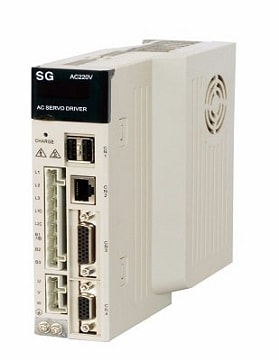

Драйвер серводвигателя (сервомотора)
Драйвер серводвигателя (сервомотора) - данное электронное устройство управляет вращением сервомотора. Драйвер, их также называют сервоусилителями, сервоконтроллерами, передает сигнал на серводвигатель. Драйвер параметрируется под задачи оборудования.
Серводрайверы позволяют осуществлять управление сервомоторами.
Сервоусилитель состоит из
Сервоусилитель состоит из управляющей платы и силовой части с биполярными IGBT-транзисторами.
Серводрайвер позволяет контролировать параметры работы двигателя при помощи подачи команд на ввод и вывод. Сервопривод можно подключать к компьютеру через специальный кабель по интерфейсам EtherCAT, либо RS232. Такое подключение позволяет осуществлять параметрирование по средством подключённого компьютера. На компьютере должна быть установлена специальная программа.
Применяются на промышленном или производственном оборудовании.
В продаже существуют много разнообразных производителей: японские, немецкие, американские, европейские, китайские и другие страны производителей.
Наиболее известные производители драйверов (сервоприводов), это:
- - Siemens
- - HEIDENHAIN
- - Fanuc
- - Mitsubishi
- - Yaskawa
- - Omron
- - Allen-bradley
- - Mitsubishi Electric
- - Indramat
- - Bosch Rexroth и другие.
Для работы с данными сервоприводами необходимы:
- 1) кабель связи с данным сервоприводом;
- 2) программное обеспечение для связи с вашим сервоприводом;
- 3) программатор для связи с вашим сервоприводом.